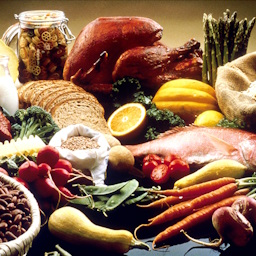
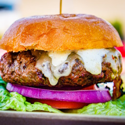

The Crisis of Global Warming
Earth's surface temperature has seen a 1.1°C[1] increase since the 1880s, and that trend isn't stopping anytime soon. Worse case scenario, that increase will become 3.3 to 5.7°C[2] by 2100. The impacts aren't light.
- Sea levels will rise by 0.32 to 1.01m[3].
- Droughts, floods and other related extreme weather events will become much more frequent.
- Crop yields will decrease and marine resources that feed 3.2 billion people will be threatened[4].
- Many wildlife species will lose their habitats.
We are running out of time and need to act fast. Let us contribute in our own ways in order to prevent this disastrous future awaiting us if we continue the way we are.
Instances of Global Warming
Global Warming has already caused much destruction around the world. Here are some of them.
- It is expected that Bangkok, Thailand will sink within the next 100 years[5].
- Europe experienced its hottest summer in 2003 for the past 500 years, fuelled by climate change, leading to approximately 70,000 deaths.[6].
- Only 19 years later, Europe experienced its worst drought in 500 years[7] in 2022.
- The 2018 California wildfires that were exacerbated by climate change were the deadliest, most damaging wildfires ever recorded in California, killing 100, destroying more than 24,000 structures and burning almost 2 million acres[8].
This is just the start. From the significant decrease of maize yields in Sub-Saharan Africa[9] to the potential loss of polar bears by 2100[10], climate change will only get worse from here if we don't act. So, how do we stop this dystopian-like future?
Mitigating Global Warming
Support the world by doing various things on your part. Start using electric vehicles instead of diesel, eat less meat or even donate to the cause in order to fight climate change!
Research the benefits of electric cars at Liberty Insurance.
Eat less meat without going full vegetarian with Simply Recipes.
Try out vegan meats lab-produced by Impossible Foods.
Everyone's contribution matters, including yours. What are you waiting for? Let's save the world.
References
- Data from a report named "Summary for Policymakers" by IPCC, B.1.1.
- Projected sea level changes from IPCC, 13.5.1.
- Yearly average temperature recorded by NOAA.
- Compiled from the UN.
- Compiled from the Bangkok Post.
- Compiled from Wikipedia.
- Taken from a report that was highlighted in BBC News.
- Data from a report by the California Department of Forestry and Fire Protection.
- Taken from a report on Nature.com's Scientific Reports.
- Compiled by BBC News.